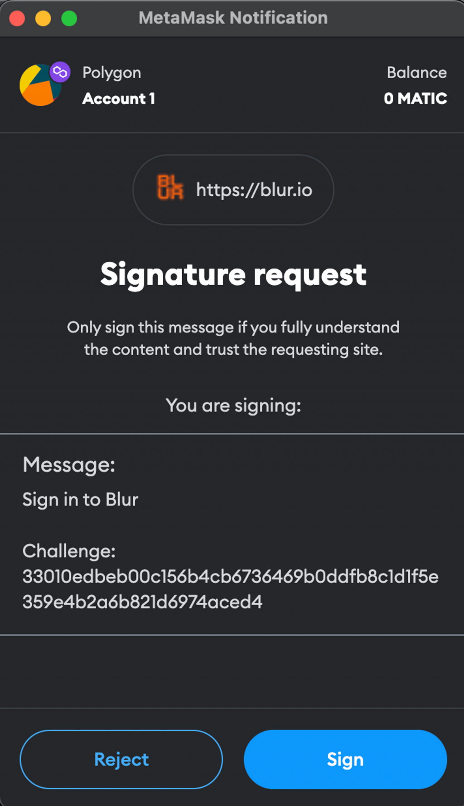
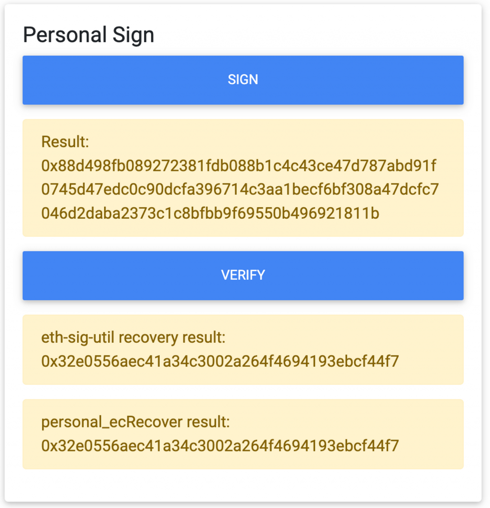
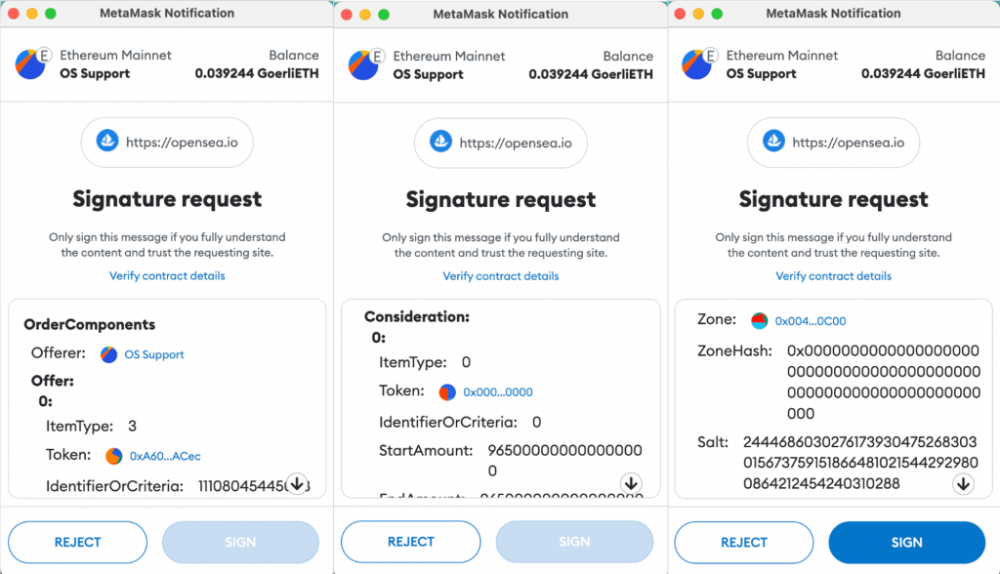
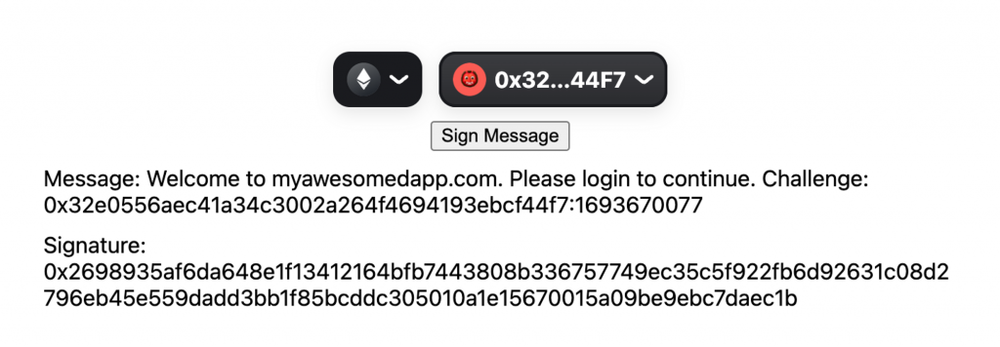
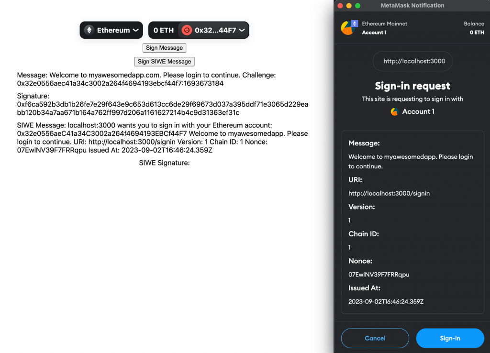
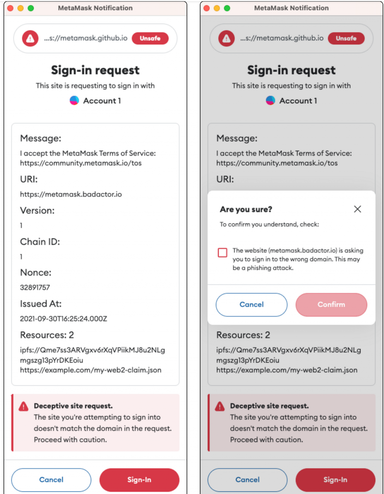

今天我們會進入到錢包登入的實作。很多 DApp 如 Blur（NFT marketplace）、Lenster（Web3 社群平台）都是使用錢包地址作為唯一識別使用者的 ID，這樣的好處是在 Web 3 的世界就不需依賴任何 Web 2 世界的登入方式（Google, Facebook 等等），是個純去中心化的登入方式，而且只有知道私鑰的人才能掌握這個錢包並登入。而這個登入機制由於涉及簽名的概念跟前後端的實作，今天會先帶大家了解以太坊簽名的幾種類型與機制，再講到前端需要提供怎樣的資料給後端，最後介紹 Sign in with Ethereum 這個登入的標準。
在開始講登入機制前，首先要了解簽名的作用以及種類。回顧一下 Day 2 我們提到簽章的概念：
而我要怎麼從一個帳戶（地址）轉帳出去，就必須證明我擁有這個地址的使用權，這就是透過這個地址背後對應的一把「私鑰」，透過私鑰與一系列密碼學的計算產生「簽章」後廣播給全世界的人，別人就可以透過這個「簽章」來驗證這筆交易是否真的是由擁有私鑰的人簽名出來的。如果驗證通過，這筆轉帳的交易才會成立並被包含到區塊鏈的帳本中
所以簽名（Sign）就是產生簽章（Signature）的過程，本質上簽名機制在密碼學中要做到的事情就是要證明我的身份。在以太坊的世界裡，除了發送交易時要簽名給區塊鏈節點驗證之外，也有一些場景是不需要發送交易的，只是透過簽名一個訊息讓別人（服務）相信我擁有這個地址的私鑰。這裡我不會細講簽名背後的數學原理，有興趣的話可以查 ECDSA （橢圓曲線密碼學）的機制。
接下來要介紹兩種簽名訊息的方式：Sign Personal Message 以及 Sign Typed
Data。這兩種方法都是可以從 DApp
發起請求給錢包來要求簽名的方式。發請求的通訊方式也是透過 JSON RPC
傳送，他們分別對應到 personal_sign 跟
eth_signTypedData_v4 這兩個 JSON RPC Method。
首先介紹 Sign Personal Message
(personal_sign)，如果讀者嘗試進到 Blur 並連結錢包登入，就會跳出這樣的畫面：

這代表 Blur 這個 DApp 要求 Metamask 簽名了一個訊息，內容就是
Message: 以下的所有文字。而這就是 Sign Personal Message
要做的事情：簽名任何一個字串。這個字串的內容可以由 DApp 自己決定，只要
DApp
在收到使用者的錢包簽名後，能夠驗證這個簽名是否真的是這個地址的私鑰簽名出來的東西即可。當
DApp
使用這個方法要求簽名時，通常都會給出可讀的訊息，讓我們看得懂正在簽的東西，常見的就是呈現我正在登入什麼服務的資訊，並加上一個隨機的字串（以
blur 的例子就是 challenge
後的那一串東西），來避免別人拿到我過去對某個訊息的簽名就能以我的身份登入這個服務。
Metamask 有個 demo DApp 可以讓我們實際操作 Sign Personal Message 以及還原。進到以上的 DApp 中連接錢包並點擊 Personal Sign 底下的 Sign 按鈕，就可以看到自己錢包簽名出來的訊息。簽出來的東西會是一個總共 65 bytes 的 hex 字串，像我的是：
[code] 0x88d498fb089272381fdb088b1c4c43ce47d787abd91f0745d47edc0c90dcfa396714c3aa1becf6bf308a47dcfc7046d2daba2373c1c8bfbb9f69550b496921811b
[/code]
他是我對以下訊息的簽章
[code] Example personal_sign message
[/code]
接下來按下 Verify 按鈕他就會再基於這個簽章計算出原本簽名的錢包地址，可以看到算出來的地址跟我的地址是吻合的，背後用的是 @metamask/eth-sig-util 這個套件裡的 recoverPersonalSignature 方法。特別要注意的是這個 recover 的過程必須擁有簽章跟當初簽名的訊息，才能還原出這個簽章是誰簽的。

再來要介紹 Sign Typed Data
(eth_signTypedData_v4)，顧名思義就是對某個型別的資料做簽名。想像一下如果我有以下的資料類型：
[code] type Address = string;
interface Person {
name: string;
wallets: Address[];
}
interface Group {
name: string;
members: Person[];
}
interface Mail {
from: Person;
to: Person[];
contents: string;
}[/code]
並且我想要對以下這個 Mail 資料簽名
[code] { contents: ‘Hello, Bob!’, from: { name: ‘Cow’, wallets: [ ‘0xCD2a3d9F938E13CD947Ec05AbC7FE734Df8DD826’, ‘0xDeaDbeefdEAdbeefdEadbEEFdeadbeEFdEaDbeeF’, ], }, to: [ { name: ‘Bob’, wallets: [ ‘0xbBbBBBBbbBBBbbbBbbBbbbbBBbBbbbbBbBbbBBbB’, ‘0xB0BdaBea57B0BDABeA57b0bdABEA57b0BDabEa57’, ‘0xB0B0b0b0b0b0B000000000000000000000000000’, ], }, ], }
[/code]
這樣要怎麼做呢？一個直觀的想法是直接把這個資料做 JSON stringify，然後使用 Sign Personal Message 簽下去就好了。但這樣做法的缺點是如果這個簽章要在鏈上的智能合約中被驗證，就會花費太多 gas fee，因為要解析和驗證 JSON 字串需要複雜的計算和操作。使用 Sign Typed Data 方法的話則是會先把這個 Typed Data 透過一個既定的算法產生 hash，再去簽名這個 hash，這樣在鏈上就可以用更有效率的方式驗證他。這背後用的是 EIP-712 這個標準來定義一個 typed data 的 hash 應該要如何計算。
至於什麼場景會需要在鏈上驗證 Sign Typed Data 的結果？一個例子是像 Opensea 這樣的 NFT Marketplace，為了做到賣家可以方便掛單、買家可以方便購買 NFT，會讓賣家在掛單時簽名長得像這樣的掛單資料（三張圖是同一個簽章，參考官方文件）：

注意到跟 Sign Personal Message 的畫面不太一樣，是比較有結構的資料。賣家簽完名就代表他已經同意以某個固定的價格出售此 NFT，這樣當買家願意成交的時候，就只要在發出購買交易時把賣家的簽章送到智能合約上，並支付對應的價格，在合約中驗證通過就能自動完成這筆交易了（賣家的 NFT 轉給買家、買家的錢轉給賣家）。在 Metamask 關於 Sign Data 的文件中有更多關於實際使用 Sign Typed Data 時的細節（例如還需要提供 domain 資料），有興趣的讀者可以再深入了解。
了解前面兩種簽名方法後，就可以來介紹錢包登入時前端所需傳送給後端的資料了。由於這個簽章沒有要在鏈上驗證，可以使用 Sign Personal Message 方法即可。這個簽章要讓後端進行驗證，所以前後端就必須約定好一個訊息的格式，就像最前面 blur 的登入訊息都有固定的格式一樣（只有最後的 challenge 字串會變），後端才能透過訊息內容跟簽章來還原出是哪個地址簽的名，進而比對還原結果跟使用者宣稱的地址是否為同一個。
爲了避免別人只要拿到我過去對某個訊息的簽名就能以我的身份登入這個服務（又稱為 Replay Attack），需要設計一個簽名不能被重複使用的機制。以下先示範一個最簡單的作法，透過組合錢包地址跟當下的 timestamp 來產生唯一的訊息，這樣後端也能在驗證簽章的同時驗這個 timestamp 是否已經太舊，來避免 Replay Attack。
要簽 Personal Message 就可以使用 wagmi 的 useSignMessage
hook，搭配 useAccount
拿到當下登入的錢包地址，基於錢包地址跟 timestamp
算出要簽名的訊息，使用者點擊 Sign 後呼叫 signMessage()
就可以把簽章顯示在畫面上了。另外為了讓簽名訊息更加唯一，通常會放一些這個應用專屬的字串（例如應用名稱、網址、歡迎訊息等等）
[code] import { useAccount, useSignMessage } from “wagmi”; import { ConnectButton } from “@rainbow-me/rainbowkit”; import { useEffect, useState } from “react”;
function SignIn() {
const { address } = useAccount();
const [message, setMessage] = useState("");
useEffect(() => {
if (address) {
const timestamp = Math.floor(new Date().getTime() / 1000);
// set msg based on current wallet address and timestamp, with unique application string
setMessage(
`Welcome to myawesomedapp.com. Please login to continue. Challenge: ${address?.toLowerCase()}:${timestamp}`
);
}
}, [address]);
const {
data: signature,
isError,
error,
signMessage,
} = useSignMessage({ message });
return (
<div
style={{
padding: 50,
display: "flex",
flexDirection: "column",
alignItems: "center",
gap: 10,
overflowWrap: "anywhere",
}}
>
<ConnectButton />
<button onClick={() => signMessage()}>Sign Message</button>
<div>Message: {message}</div>
<div>Signature: {signature}</div>
{isError && <div>Error: {error?.message}</div>}
</div>
);
}[/code]
呈現效果如圖，這樣後續只要把錢包地址、timestamp 跟 signature 送到後端，後端就能自己組出簽名的訊息並驗證簽章是否有效了。如果有成功跑到這裡的讀者可以把 message 跟 signature 記錄下來，會在後續的後端開發中用來確認驗簽章的 function 是否運作正常。

提到錢包登入就必須提到已經成為以太坊標準的 Sign in with Ethereum（SIWE）協議。這個是 ERC-4361 所定義的，因為大家在實作用錢包簽名登入時，會發明很多各式各樣的訊息格式，不夠謹慎的話可能有安全性不足的問題。所以 Sign in with Ethereum 標準就是想統一登入時簽名訊息的格式。依據官方文件，以下是一個範例的 SIWE 訊息：
[code] service.org wants you to sign in with your Ethereum account: 0xc02aaa39b223fe8d0a0e5c4f27ead9083c756cc2
I accept the ServiceOrg Terms of Service: https://service.org/tos
URI: https://service.org/login
Version: 1
Chain ID: 1
Nonce: 32891756
Issued At: 2021-09-30T16:25:24Z
Resources:
- ipfs://bafybeiemxf5abjwjbikoz4mc3a3dla6ual3jsgpdr4cjr3oz3evfyavhwq/
- https://example.com/my-web2-claim.json[/code]
可以看到裡面包含了 domain, wallet address, URI, Chain, Nonce, timestamp 等等資訊，非常完整且安全性更高，像是他寫清楚了應用的 domain name 來避免使用者被釣魚、透過 Nonce 來確保每次簽名的訊息都不一樣、透過 Issued At 來紀錄 timestamp 等等。
使用方式只要先跑 pnpm i siwe 來安裝 siwe
套件，並使用 new siwe.SiweMessage() 來產出 SIWE Message
即可
[code] import * as siwe from “siwe”;
function createSiweMessage(address: string): string {
const siweMessage = new siwe.SiweMessage({
domain: "localhost:3000",
address,
statement: "Welcome to myawesomedapp. Please login to continue.",
uri: "http://localhost:3000/signin",
version: "1",
chainId: 1,
nonce: "07EwlNV39F7FRRqpu",
});
return siweMessage.prepareMessage();
}[/code]
再來就可以在畫面上加入對應的 SIWE message 與 signature
[code] // SignIn() const [siweMessage, setSiweMessage] = useState(““); useEffect(() => { if (address) { setSiweMessage(createSiweMessage(address)); } }, [address]); const { data: siweSignature, signMessage: signSiweMessage } = useSignMessage({ message: siweMessage, });
// in return
<ConnectButton />
<button onClick={() => signMessage()}>Sign Message</button>
<button onClick={() => signSiweMessage()}>Sign SIWE Message</button>
<div>Message: {message}</div>
<div>Signature: {signature}</div>
{isError && <div>Error: {error?.message}</div>}
<div>SIWE Message: {siweMessage}</div>
<div>SIWE Signature: {siweSignature}</div>[/code]
點擊 Sign SIWE Message 就會呈現這樣的效果，可以注意到 Metamask 有針對 SIWE Message 特別顯示更好看的格式，而不是直接呈現 Sign Personal Message 的效果

另外一個值得提的功能是，Metamask 就有內建防止 SIWE
簽名釣魚的機制。如果把 new siwe.SiweMessage() 中的
domain 換成非 localhost:3000 的值（例如
localhost:3001），再按一次 Sign SIWE Message 的話，Metamask
就會偵測到 domain name mismatch
並跳出釣魚的警告，因為以這個例子來說很有可能是使用者進到
localhost:3000 這個釣魚網站，想要竊取他在
localhost:3001 網站的簽名。效果類似以下的圖（取自 Metamask
SIWE 文件）

今天我們詳細介紹以太坊中 Sign Personal Message 跟 Sign Typed Data 的概念，並使用 Sign Personal Message 來實作錢包登入的前端部分，拿到 Signature 以便未來傳給後端做驗證。最後介紹並實作了 Sign in with Ethereum 標準來統一錢包登入的訊息規格。Sign in with Ethereum 官方文件已經有很完整的各語言的實作，有興趣的讀者可以往下研究。以及像 Rainbow Kit 中也有 Authentication 模組，是使用 Next Auth 來實作 SIWE 登入，都是很好的資源。
今天的程式碼都放在這裡。Web3 與前端基礎部分的文章就到這邊，接下來就會開始進入 Web3 與後端的主題囉！